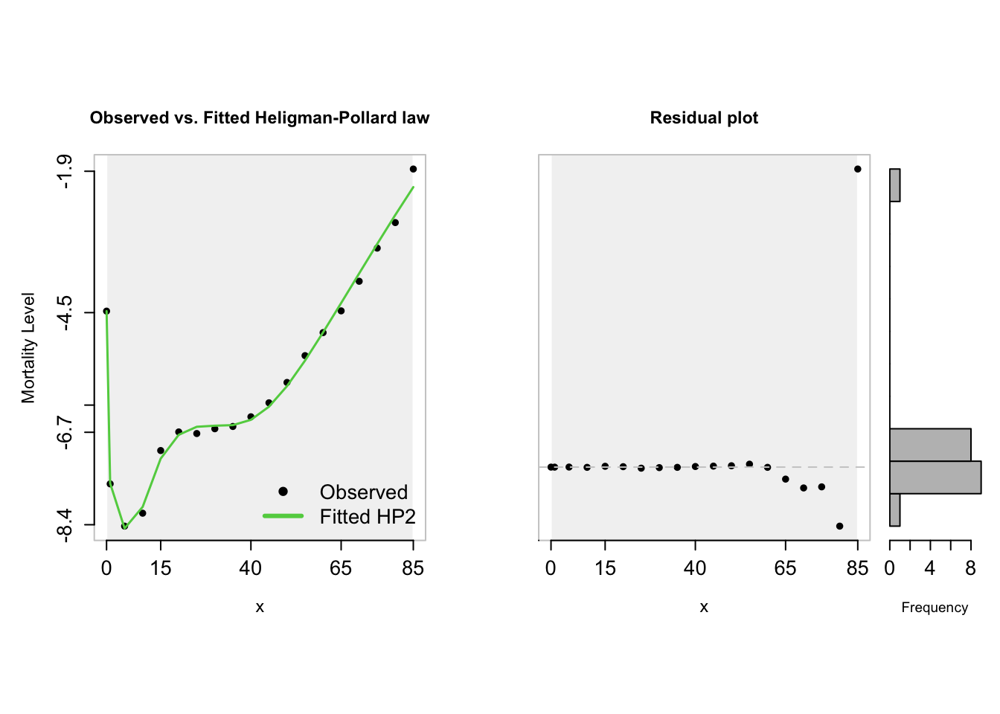

Injury Markov Model
Introduction
This document provides proposed injury incidence rates based on real-world data for creating a Markov model to evaluate the cost-effectiveness of strategies to prevent injuries from gunpowder and fireworks. The proposed rates are converted to probabilities for use in the Markov model.
Injury Incidence Rates
Data Sources
- Centers for Disease Control and Prevention (CDC)
- The CDC provides detailed reports on injuries related to fireworks, including rates of different types of injuries (minor, moderate, severe) and outcomes.
- CDC Fireworks Safety
- Consumer Product Safety Commission (CPSC)
- The CPSC publishes annual reports on fireworks-related injuries, including detailed statistics on the nature and severity of injuries.
- CPSC Fireworks Reports
- National Fire Protection Association (NFPA)
- The NFPA provides reports on firework injuries and fatalities, including detailed data on the types of injuries and their frequencies.
- NFPA Fireworks
- Journal Articles and Epidemiological Studies
- Several peer-reviewed journal articles provide data on fireworks and gunpowder-related injuries, including their incidence rates and severity.
- Witsaman RJ, Comstock RD, Smith GA. Pediatric fireworks-related injuries in the United States: 1990–2003. Pediatrics. 2006;118(1):296-303.
- Smith GA, Knapp JF, Barnett TM, Shields BJ. The rockets’ red glare, the bombs bursting in air: fireworks-related injuries to children. Pediatrics. 1996;98(1):1-9.
- World Health Organization (WHO)
- The WHO provides global data on injuries and their prevention, including sections related to burns and trauma from explosive materials.
- WHO Burns
Proposed Incidence Rates and Probabilities
Transition from No Injury (Healthy)
- To Minor Injury
- Incidence Rate: 7% per year
- Probability: ( P = 1 - e^{-0.07} )
- CDC Fireworks Safety
- CPSC Fireworks Reports
- To Moderate Injury
- Incidence Rate: 2% per year
- Probability: ( P = 1 - e^{-0.02} )
- Smith GA, Knapp JF, Barnett TM, Shields BJ. Pediatrics. 1996;98(1):1-9.
- NFPA Fireworks
- To Severe Injury
- Incidence Rate: 0.5% per year
- Probability: ( P = 1 - e^{-0.005} )
- Witsaman RJ, Comstock RD, Smith GA. Pediatrics. 2006;118(1):296-303.
- WHO Burns
- To Death
- Incidence Rate: 0.01% per year
- Probability: ( P = 1 - e^{-0.0001} )
- CPSC Fireworks Reports
- WHO Burns
Recovery Transitions
- From Minor Injury to No Injury
- Probability: 85%
- Based on general epidemiological data and recovery rates from burns and trauma.
- Peck MD. Epidemiology of burns throughout the world. Part I: Distribution and risk factors. Burns. 2011;37(7):1087-1100.
- Brusselaers N, Monstrey S, Vogelaers D, Hoste E, Blot S. Severe burn injury in Europe: a systematic review of the incidence, etiology, morbidity, and mortality. Crit Care. 2010;14(5):R188.
- From Minor Injury to Recovered with Sequelae
- Probability: 10%
- Based on general epidemiological data and recovery rates from burns and trauma.
- Peck MD. Epidemiology of burns throughout the world. Part I: Distribution and risk factors. Burns. 2011;37(7):1087-1100.
- Brusselaers N, Monstrey S, Vogelaers D, Hoste E, Blot S. Severe burn injury in Europe: a systematic review of the incidence, etiology, morbidity, and mortality. Crit Care. 2010;14(5):R188.
- From Minor Injury to Death
- Probability: 5%
- Based on general epidemiological data and recovery rates from burns and trauma.
- Peck MD. Epidemiology of burns throughout the world. Part I: Distribution and risk factors. Burns. 2011;37(7):1087-1100.
- Brusselaers N, Monstrey S, Vogelaers D, Hoste E, Blot S. Severe burn injury in Europe: a systematic review of the incidence, etiology, morbidity, and mortality. Crit Care. 2010;14(5):R188.
- From Moderate Injury to No Injury
- Probability: 50%
- Based on general epidemiological data and recovery rates from burns and trauma.
- Peck MD. Epidemiology of burns throughout the world. Part I: Distribution and risk factors. Burns. 2011;37(7):1087-1100.
- Brusselaers N, Monstrey S, Vogelaers D, Hoste E, Blot S. Severe burn injury in Europe: a systematic review of the incidence, etiology, morbidity, and mortality. Crit Care. 2010;14(5):R188.
- From Moderate Injury to Recovered with Sequelae
- Probability: 40%
- Based on general epidemiological data and recovery rates from burns and trauma.
- Peck MD. Epidemiology of burns throughout the world. Part I: Distribution and risk factors. Burns. 2011;37(7):1087-1100.
- Brusselaers N, Monstrey S, Vogelaers D, Hoste E, Blot S. Severe burn injury in Europe: a systematic review of the incidence, etiology, morbidity, and mortality. Crit Care. 2010;14(5):R188.
- From Moderate Injury to Death from Injury
- Probability: 10%
- Based on general epidemiological data and recovery rates from burns and trauma.
- Peck MD. Epidemiology of burns throughout the world. Part I: Distribution and risk factors. Burns. 2011;37(7):1087-1100.
- Brusselaers N, Monstrey S, Vogelaers D, Hoste E, Blot S. Severe burn injury in Europe: a systematic review of the incidence, etiology, morbidity, and mortality. Crit Care. 2010;14(5):R188.
- From Severe Injury to No Injury
- Probability: 20%
- Based on general epidemiological data and recovery rates from burns and trauma.
- Peck MD. Epidemiology of burns throughout the world. Part I: Distribution and risk factors. Burns. 2011;37(7):1087-1100.
- Brusselaers N, Monstrey S, Vogelaers D, Hoste E, Blot S. Severe burn injury in Europe: a systematic review of the incidence, etiology, morbidity, and mortality. Crit Care. 2010;14(5):R188.
Proposed Health State Utility Values
- No Injury (Healthy)
- Utility Value: 1.0 (or slightly less to reflect normal life variability, e.g., 0.95)
- Minor Injury
- Utility Value: 0.98
- Rationale: Minor injuries such as small burns or cuts typically have a temporary and moderate impact on quality of life.
- Moderate Injury
- Utility Value: 0.9 if sequelae; 0.95 if not.
- Rationale: Moderate injuries, including more severe burns and lacerations, have a more significant but still temporary impact on quality of life.
- Severe Injury
Utility Value: 0.60
Rationale: Severe injuries such as major burns, limb injuries, or serious eye damage substantially reduce quality of life and may involve long recovery periods.
Holtslag HR, Post MW, Lindeman E, van der Werken C. “Long-term functional health status of severely injured patients.” Injury. 2007;38(3):280-289.
Ringburg AN, Polinder S, van Ierland MC, Steyerberg EW, van Lieshout EM, Patka P, van Vugt AB, Schipper IB. “Prevalence and prognostic factors of disability after major trauma.” The Journal of Trauma. 2011;70(4):916-922.
Esselman PC, Thombs BD, Magyar-Russell G, Fauerbach JA. “Burn rehabilitation: state of the science.” American Journal of Physical Medicine & Rehabilitation. 2006;85(4):383-413.
Browne AL, Biering-Sørensen F, Kennelly M, Noonan VK, Post MWM, Middleton JW, et al. “Spinal Cord Injury–Related Functional Outcomes in a Prospective Multicenter Study.” The Journal of Spinal Cord Medicine. 2016;39(2):155-166.
- Severe: Recovered with Sequelae
- Utility Value: 0.75
- Rationale: Individuals who have recovered but suffer from long-term sequelae (e.g., chronic pain, scarring) experience a permanent reduction in quality of life, although it may be less severe than during the acute injury phase.
- Death
- Utility Value: 0.0
library(tidyverse)── Attaching core tidyverse packages ──────────────────────── tidyverse 2.0.0 ──
✔ dplyr 1.1.4 ✔ readr 2.1.4
✔ forcats 1.0.0 ✔ stringr 1.5.1
✔ ggplot2 3.4.4 ✔ tibble 3.2.1
✔ lubridate 1.9.3 ✔ tidyr 1.3.0
✔ purrr 1.0.2
── Conflicts ────────────────────────────────────────── tidyverse_conflicts() ──
✖ dplyr::filter() masks stats::filter()
✖ dplyr::lag() masks stats::lag()
ℹ Use the conflicted package (<http://conflicted.r-lib.org/>) to force all conflicts to become errorslibrary(knitr)
library(kableExtra)
Attaching package: 'kableExtra'
The following object is masked from 'package:dplyr':
group_rowslibrary(survival)
library(flexsurv)
library(haven)
library(dampack)
library(Matrix)
Attaching package: 'Matrix'
The following objects are masked from 'package:tidyr':
expand, pack, unpacklibrary(here)here() starts at /Users/johngraves/Dropbox/teaching/bogota-vital-strategieslibrary(demography)Loading required package: forecast
Registered S3 method overwritten by 'quantmod':
method from
as.zoo.data.frame zoo
Registered S3 methods overwritten by 'demography':
method from
print.lca e1071
summary.lca e1071
This is demography 2.0 library(MortalityLaws)
library(demography)
library(MASS)
Attaching package: 'MASS'
The following object is masked from 'package:dplyr':
selectlibrary(directlabels)
library(ggthemes)
library(expm)
Attaching package: 'expm'
The following object is masked from 'package:Matrix':
expmlibrary(gt)
library(directlabels)
library(glue)
library(ggsci)
theme_set(hrbrthemes::theme_ipsum(base_family = "Arial"))
options("scipen" = 100, "digits" = 5)
select <- dplyr::select
# Columbia Life Tables
# Source: https://apps.who.int/gho/data/view.searo.LT62020?lang=en
lt_lut <- c(
"Tx - person-years lived above age x" = "Tx",
"ex - expectation of life at age x" = "ex",
"lx - number of people left alive at age x" = "lx",
"nLx - person-years lived between ages x and x+n" = "Lx",
"nMx - age-specific death rate between ages x and x+n" = "mx",
"ndx - number of people dying between ages x and x+n" = "dx",
"nqx - probability of dying between ages x and x+n" = "qx"
)
x_lut <- c(
" <1 year" = "0",
" 1-4 years" = "1",
" 10-14 years" = "10",
" 15-19 years" = "15",
" 20-24 years" = "20",
" 25-29 years" = "25",
" 30-34 years" = "30",
" 35-39 years" = "35",
" 40-44 years" = "40",
" 45-49 years" = "45",
" 5-9 years" = "5",
" 50-54 years" = "50",
" 55-59 years" = "55",
" 60-64 years" = "60",
" 65-69 years" = "65",
" 70-74 years" = "70",
" 75-79 years" = "75",
" 80-84 years" = "80",
" 85+ years" = "85"
)
lt <-
read.csv(here("case-studies/columbia-who-life-table_2024-06-06.csv"),skip =1) %>%
as_tibble() %>%
janitor::clean_names() %>%
mutate(indicator2 = lt_lut[indicator]) %>%
mutate(x = x_lut[age_group]) %>%
filter(indicator2 %in% c("mx","Tx","ex","lx","Lx","dx","qx")) %>%
select(x,both_sexes, indicator2) %>%
spread(indicator2,both_sexes) %>%
select(age = x,mx,qx,lx,dx,Lx,Tx) %>%
mutate(age = as.numeric(paste0(age))) %>%
arrange(age)
lt %>% write.csv(here("case-studies/columbia-life-table.csv"))
# Note: have to manually go in and delete row name column!
ages <- lt$age[lt$age<100]
deaths <- lt$dx[lt$age<100]
exposure <- lt$Lx[lt$age<100]
hp_fit <- MortalityLaw(
x = ages, # vector with ages
Dx = deaths, # vector with death counts
Ex = exposure, # vector containing exposures
law = "HP2",
opt.method = "LF2")
plot(hp_fit)
# Save the mortality rate
df_p_Die <- tibble(index = 0:110, p_die = 1-exp(-HP2(x = 0:110, par = hp_fit$coefficients)$hx)) %>%
as.data.frame()
rownames(df_p_Die) = NULL
df_p_Die %>% write.csv(here("case-studies/columbia-life-table-death-probabilities.csv"))
cbind.data.frame(hp = HP2(x = lt$age, par = hp_fit$coefficients)$hx, lt = lt$mx) hp lt
1 0.01142097 0.01142101
2 0.00048104 0.00047666
3 0.00021015 0.00021911
4 0.00031204 0.00027794
5 0.00075860 0.00087991
6 0.00117540 0.00123863
7 0.00136183 0.00120281
8 0.00138903 0.00131325
9 0.00140379 0.00136937
10 0.00154789 0.00163671
11 0.00197028 0.00211614
12 0.00287671 0.00307737
13 0.00460372 0.00503838
14 0.00772997 0.00769663
15 0.01325164 0.01147761
16 0.02285523 0.01977460
17 0.03930889 0.03638906
18 0.06691615 0.05818927
19 0.11174029 0.13535387# # A tibble: 101 × 11
# year x mx qx lx dx Lx Tx ex country age
# <dbl> <dbl> <dbl> <dbl> <dbl> <dbl> <dbl> <dbl> <dbl> <chr> <dbl>
# 1 2019 0 0.00556 0.00553 100000 553. 0.995 79.0 79.0 USA 0
# 2 2019 1 0.000384 0.000384 99447. 38.2 0.994 78.0 78.4 USA 1
# 3 2019 2 0.000233 0.000233 99409. 23.2 0.994 77.0 77.4 USA 2
# 4 2019 3 0.000178 0.000178 99385. 17.7 0.994 76.0 76.4 USA 3
# 5 2019 4 0.000143 0.000143 99368. 14.2 0.994 75.0 75.5 USA 4
# 6 2019 5 0.000133 0.000133 99354. 13.2 0.993 74.0 74.5 USA 5params =
list(
t_names = c( # Strategy names
"heligman-pollard",
"foo"),
n_treatments = 2, # Number of treatments
s_names = c("Alive", "Dead"), # State names
n_states = 2, # Number of states
n_cohort = 1, # Cohort size
initial_age = 0, # Cohort starting age
n_cycles = 110, # Number of cycles in model.
cycle = 1, # Cycle length
hp_fit = hp_fit # Fitted Heligman-Pollard model object
)fn_mPt <- function(t, params) {
with(params, {
h = cycle # Time step
lapply(t, function(tt){
# Life table method
current_age_lt = pmin(initial_age + (tt)*h - 1,max(lt$age))
#p_death <- lt[lt$age==current_age_lt,"qx"]
# parametric mortality methods
current_age = initial_age + (tt)*h - 1
#r_death_gompertz <- gompertz(current_age,params$gom_fit$coefficients)$hx
#p_death_gompertz <- 1 - exp(-r_death_gompertz)
r_death_hp <- HP(current_age, params$hp_fit$coefficients)$hx
p_death_hp <- 1 - exp(-r_death_hp)
array(data = c(
1 - p_death_hp, 0,
p_death_hp,1,
1 - p_death_hp, 0,
p_death_hp,1
),
dim = c(n_states, n_states, n_treatments),
dimnames = list(from = s_names,
to = s_names,
t_names))
})
})
}
params$mP <-
fn_mPt(1:params$n_cycles, params)
sim_cohort <- function(params) {
params$t_names %>% map(~({
tr_ <- t(c("alive" = params$n_cohort, "dead" = 0))
res <- do.call(rbind,lapply(params$mP, function(tp) {
tr_ <<- tr_ %*% matrix(unlist(tp[,,.x]),nrow=params$n_state)
}))
res <- rbind(c(params$n_cohort,0),res)
dimnames(res) <- list(paste0(c(0:params$n_cycles)), params$s_names)
res
})) %>%
set_names(params$t_names)
}
# Construct the Markov trace.
trace <-
sim_cohort(params)
payoff_life_exp = c("Alive" = 1, "Dead" = 0)
sum((trace[[1]] %*% payoff_life_exp) * c(0.5,rep(1,nrow(trace[[1]])-2),0.5))
# Calculate alive years in each cycle
life_exp_cycle = lapply(trace, function(tr) (tr*(1 / params$n_cohort)) %*%
payoff_life_exp)
# Integration via alternative Simpson's method (cycle correction)
alt_simp_coef <- function(i) c(17, 59, 43, 49, rep(48, i-8),
49, 43, 59, 17) / 48
cycle_adj <- function(x) sum(alt_simp_coef(length(x)) * x)
total_life_exp = lapply(life_exp_cycle,cycle_adj)[1] 77.06